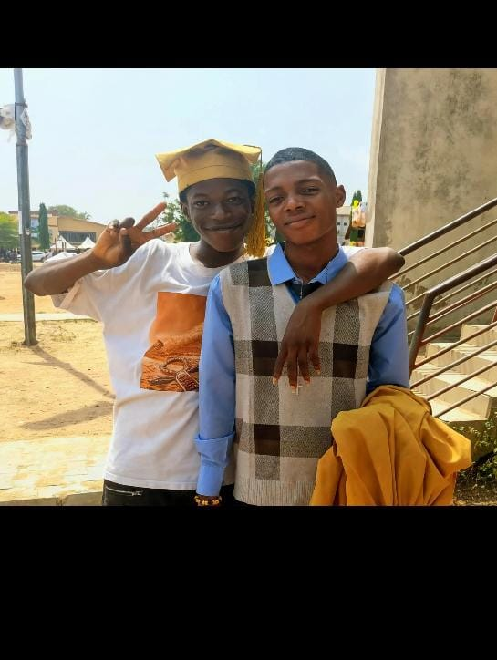

OUR MOMENTS
Memories In Pictures
Every picture holds a moment. Every moment holds a story.

The Beginning
One of the moments that became part of our story.

School Days
Six years of memories that still mean something today.
Good Times
The people, laughter and moments that made those days special.
THE BEGINNING OF A SPECIAL FOUR DAYS
Camp With You
I went to camp with you and Marvellous, and it became one of those experiences I didn't expect to remember so clearly.
It was my first time at your church. We worshipped, ate, talked, laughed and simply enjoyed being there.
A DAY WORTH REMEMBERINGCHRISTMAS DAY
My First Christmas At Your Church
Christmas felt different that year because it was my first Christmas at your church. There was happiness everywhere.
You even managed to make me almost regret coming when you left the church compound without telling me and went to a restaurant. 😂
But you're my best friend, so of course I forgave you.
CHRISTMAS 2024A SMALL GESTURE
You Remembered Me
You gave me a New Year gift, and I was genuinely happy.
It wasn't just about receiving something. It was the thought behind it.
That same day, I helped you with a school assignment project. Moments like that remind me that friendship can simply mean being there for each other.
FRIENDSHIPOne day, we may forget the exact dates, the little details and even some of the conversations. But I hope we never forget how much fun it was to live those moments.
— ADEWOLETHE STORY CONTINUES
One More Chapter.
The memories brought us here. Now there's something I want you to read.
CONTINUE →